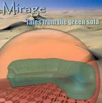

Home Artist links Label link

Mirage - Tales From The Green Sofa
| Artist: | Mirage |
| Title: | Tales From The Green Sofa |
| Label: | Musea FGBG 4568.AR |
| Length(s): | 60 minutes |
| Year(s) of release: | 2004 |
| Month of review: | [02/2005] |
Line up
Stephan Forner - electric and acoustic guitars, vocals
Cyrille Forner - electric and acoustic basses, vocals
Philippe Duplessy - keyboards
Joel Mondon - drums
with
Agnes Forner - flute
Loic Brétigniere - congas
Cedric Cartaud - acoustic guitar
Tracks
| 1) | Secret Place I | 9.03
|
| 2) | You Don't Fool Me | 10.29
|
| 3) | Friends Of Mine | 11.19
|
| 4) | Gone Margarita | 9.24
|
| 5) | Tales From The Green Sofa | 12.34
|
| 6) | Secret Place II | 7.43
|
Summary
If I saw this cd in the shops, I probably would not buy it because
of the cover. I mean, I guess there is supposed to be something funny
about a green sofa, but I don't see it, and it does not make
the cd more appetizing. Hopefully, the music does.
The music
With a name like Mirage, one may expect a Camel oriented brand of symphonic
rock and this does in fact happens to be the case. Secret Place I opens
with mellow guitar tones, a low rumbling fretless bass, and the typical
lyrical melodies of Latimer cs. There is also an element of Focus here.
On the whole the song has a very warm sound, and the melodic material
is good. After three minutes we come to a restart, with acoustic guitar.
The vocals are on the mellow side, rather accented, but not overly much.
Although the vocalists are French, not German, there is something
of Everon's vocalist here (but more accented). The tempo stays low, even
through the rather up-beat keyboard solo's. I would have expected a speed-up
here. We do move into a more groovy passage now, in which the previous
verses are more or less repeated. Like Alan Parsons Project and Latimer,
this band does not depend on the vocals, it is the melodies and mood that
you have to be after. And these are good. The final three minutes are more or
less purely electric guitar, well minus the final few seconds.
Flute opens on You Don't Fool Me, again a beautiful lyrical melody,
and subtle too. The guitar melody seems almost literally taken from a Camel
record. The organ and the breaks bring in a different, temperamental feel.
For the rest, it brings the same Camel oriented (Nude era),
blues styled sympho. The vocals come in after six minutes, and I wonder why.
It is not necessary, and the band must see that the vocals are the weakest
part of the set-up. The organ solo is the dominant of the final part
of this track, with the bass rumbling underneath and the drums becoming
somewhat jazzy. Friends Of Mine opens with flute as did the previous track,
and the comparisons to Camel are even stronger here, mainly because of
the vocal melody this time around. The guitar may have a bit more noise
to it, but this is anthemic Camel style, all very friendly, warm and a bit
nostalgic. Later on we get more beat, and links to Alan Parsons Project become
apparent. I wonder why they restrict the flute to the openings.
Gone Margarita opens with bluesy wailing guitar and has somber vocals, not so
strange in view of the title I guess. The song is mainly subdued, but also
has some bombastic moments built in, and some meandering organ parts too.
Melodically the least enticing so far. The title track opens with a typical
Focus style melody. Whirly keys are up next, but this does not seem to lead
anywhere. Surprisingly the song has march rhythms in there. On the whole,
this song appeals less to me than the first three tracks. The melodies
are less appealing, there is more noodling.
We close with Secret Place II, the companion piece of the opener.
Acoustic guitars here. The guitar has that temperament again, the keyboards
have a definite Supertramp ring to them at times. The bass has its moody
spotlight, with the keys figuring in the background. After the rhythm guitar
work, we close down softly.
Conclusion
If you harken back to the 'old' Camel days, the time of Nude mainly, then
Mirage is your trip. Mellow, melodic, guitar oriented prog with some
a number of keyboard/organ outings, and rather plain vocals. This is what
Latimer cs. have been giving us, both recently and at the end of the
seventies. Mirage sounds a bit more vintage than recent Camel, although
A Nod And A Wink is not that far off actually. Rich in warmth, this may be
your perfect trip back in time, and if you happened to like A Nod or Focus 8
you would do well to check this one out. Anyone looking for something renewing
should do so elsewhere.
© Jurriaan Hage